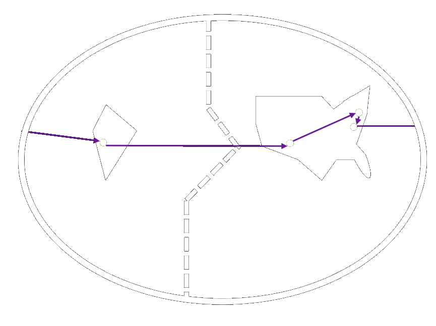

My name is Abhiti, and I'm a 22-year-old software developer. I am a graduate of the Massachusetts Institute of Technology '20. I majored in computer science and minored in economics. I love to create mobile and IoT-based solutions to issues of international development.
Over the course of these 2ish decades, I have lived in a handful of places around the world. I was born and raised in a suburb of New York. My family and I then relocated to the Indian financial capital, allowing my siblings and I to create our own memories in our motherland.
Afterwards, I matriculated in the United World College in one of the most remote and picturesque areas of the US southwest, alongside peers from 70+ countries around the world. I, then, situated myself in America's biggest college town, and pretended to figure out how various algorithms work.
I am currently waiting to begin my career as a Forward Deployed Engineer at Palantir Technologies, which will hopefully bring me to the parts of the world that I have yet to explore!
Over the course of these 2ish decades, I have lived in a handful of places around the world. I was born and raised in a suburb of New York. My family and I then relocated to the Indian financial capital, allowing my siblings and I to create our own memories in our motherland.
Afterwards, I matriculated in the United World College in one of the most remote and picturesque areas of the US southwest, alongside peers from 70+ countries around the world. I, then, situated myself in America's biggest college town, and pretended to figure out how various algorithms work.
I am currently waiting to begin my career as a Forward Deployed Engineer at Palantir Technologies, which will hopefully bring me to the parts of the world that I have yet to explore!

1997 - 2007
Scarsdale, NY
USA
2007 - 2014
Mumbai, MH
India
2014 - 2016
Montezuma, NM
USA
2016 - 2020
Cambridge, MA
USA
2020 - 20??
New York, NY
USA